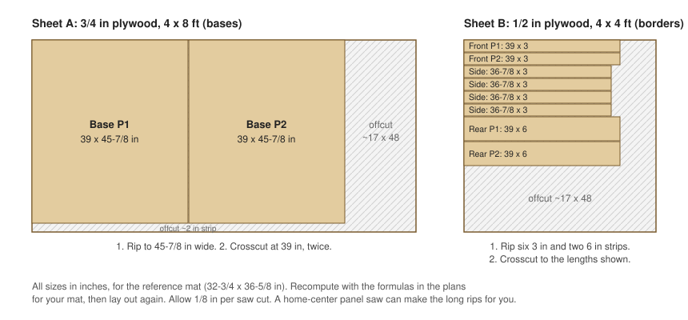
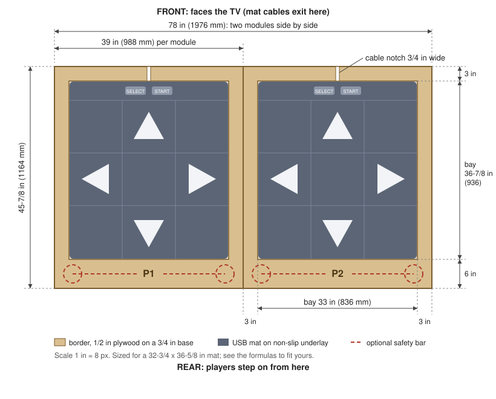
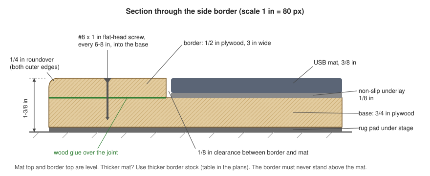

Build guide
Build it, step by step
The stage, the Pi and the AV setup, in an order that saves trouble. Each step links to the full plans for exact measurements and the reasons behind them.
- Cost
- about $405–480, plus about $160 for the optional safety bars
- Floor space
- 78 × 45-7/8 in (1976 × 1164 mm) for the stage, plus room in front for the TV
- Tools
- circular saw and straightedge (or store cuts), drill/driver, countersink bit, jigsaw or handsaw and chisel, sander, clamps, square; a router is nice to have
- Also
- a USB keyboard for setup, and another computer to reach the Pi over SSH
-
Buy the parts
The bill of materials lists every part with a price. Three things matter most:
- Mats: two identical USB "PC" mats, bought from a shop with easy returns. Avoid wireless mats, mats that act as a keyboard, and PS2 or Wii mats on USB adapters.
- Pi 4: 2 GB runs OutFox; 4 GB leaves room for big song libraries. Use the official 15 W power supply and a case with a heatsink or fan, because a throttling Pi drops frames. With a 3D printer, you can print a karaoke-speaker case (50–80 g of filament) around a heatsink with its own fan; the column version mounts on the stage with every cable leaving from the back.
- Plywood: one 4 × 8 ft sheet of 3/4 in (18 mm) for the bases, and one 4 × 4 ft sheet of 1/2 in (12 mm) for the borders if your mats are 3/8 in (10 mm) thick.
-
Set up the Pi and test the mats
Do this the day the mats arrive, while you can still send them back.
- Flash Raspberry Pi OS Lite (64-bit) with Raspberry Pi Imager. Set a user name, and turn on SSH and Wi-Fi.
- Download OutFox's Raspberry Pi (arm64) build from
projectoutfox.com and unpack it
under
~/ProjectOutFox/. - Get pi-DDR and run its installer:
It installs what the game needs, sets 1 ms mat polling, full CPU speed and a 1080p60 picture, adds the pad bridge and the OutFox settings, shares the song folder on your network, and makes the Pi boot straight into the game. The first time, it asks for a password for that share. It's safe to run again.sudo apt update && sudo apt full-upgrade -y && sudo apt install -y git git clone https://github.com/brewer-michael/pi-DDR ~/pi-DDR sudo sh ~/pi-DDR/pi/install.sh - Plug both mats in and check them:
cd ~/pi-DDR/pi sudo python3 -m piddr.matprobe list # HID type and polling rate sudo python3 -m piddr.matprobe watch # live steps, real polling rate, chatter
You want HID type: Joystick, because only those mats can be read every 1 ms, and no chatter (one step read as two). A "Gamepad" mat still works, with up to ±4 ms more timing wobble.
-
Size the stage for your mats
Lay each mat flat for a day, then measure its width W (left to right as you stand on it), depth D (TV side to back) and thickness T. The plans are drawn for a 32-3/4 × 36-5/8 × 3/8 in (830 × 930 × 10 mm) mat.
Part Formula Reference mat Bay width W + 1/4 in 33 in Bay depth D + 1/4 in 36-7/8 in Base width bay width + 6 in 39 in Base depth bay depth + 9 in 45-7/8 in Border thickness T + underlay, rounded down to a plywood size 1/2 in That gives 1/8 in (3 mm) of clearance around each mat, 3 in (76 mm) borders at the front and sides, and a 6 in (152 mm) border at the back, where players step on.
-
Cut the parts
Part Qty Size Stock Base 2 39 × 45-7/8 in 3/4 in plywood Front border 2 39 × 3 in 1/2 in plywood Rear border 2 39 × 6 in 1/2 in plywood Side border 4 36-7/8 × 3 in 1/2 in plywood Underlay 2 32-7/8 × 36-3/4 in rug pad 
Both bases come out of one 4 × 8 ft sheet and the borders out of a 4 × 4 ft sheet. Most home centers will make the long rip cuts on their panel saw if you ask. -
Build the two modules

Top view: P1 on the left, P2 on the right, the TV beyond the top edge. - Label the parts P1 and P2 as you go, and sand everything to 120 grit.
- Cut a 3/4 in (19 mm) notch through each front border where that mat's cable leaves it, usually the middle.
- Round the outer top edges of the borders (1/4 in roundover, or heavy sanding). Just ease the inner edges that face the mat.
- Dry-fit: lay the underlay and mat on the base, centred and 3 in from the front, stand the borders around it with 1/8 in spacers, and trace their positions.
- Glue and screw the front and rear borders, then the sides. Pre-drill and countersink every 6–8 in, about 1-1/2 in in from the edges, and check the mat still drops in before the glue sets.
- Let it cure overnight, fill the screw holes and sand to 180 grit.
- Paint the borders with floor paint and anti-skid additive, or use polyurethane and anti-slip tape. Leave the bay bare, so the underlay grips the wood.

The border is as thick as the mat plus its underlay, so the tops are level. -
Place the stage and fit the mats
- Join the modules with a 4 in mending plate across the seam at the front and another at the back.
- Put the rubber-backed rug pad down, then the stage on top. If it rocks, add a second layer of pad under the low corner.
- Lay each underlay in its bay and press the mat in. It should lie flat with no more than about 1/8 in of play.
- Route each cable out through its notch, clip it to the front edge with a little slack, and run both to the Pi under a floor cable cover.
- Label the plugs P1 and P2, and the Pi ports they go into. The Pi tells the players apart by which port each mat is in.
-
Optional: add safety bars
A bar behind each player, like on arcade machines, helps with balance on hard songs and with recovering from a slip. Each one is 3/4 in black-iron pipe: two floor flanges, two 30 in uprights, two elbows and a 30 in bar.
- Dry-assemble it and tighten it by hand. The flange centres end up about 31-1/2 in (800 mm) apart.
- Centre it on the rear border with the flange centres 3 in (76 mm) from the back edge. Drill through border and base with a 9/32 in bit and countersink from underneath, so the screw heads sit flush and the stage still sits flat.
- Bolt it down with 1/4-20 flat-head screws, washers and nylon lock nuts, then wrap the bar in grip tape.
Balance, not hangingThe bar ends up about 31 in (790 mm) above the mat; use 36 in uprights for tall players. Re-tighten the nuts every few months and keep small children off it.
-
Connect the TV and receiver
- Plug the Pi's HDMI0 port (the one next to the USB-C power port) into the receiver's HDMI input, and the receiver's HDMI output into the TV. Don't send audio back from the TV over ARC.
- Receiver: auto lip-sync off, audio delay 0, video passthrough, and one fixed upmix mode for this input, such as Dolby Surround, DTS Neural:X or multi-channel stereo.
- TV: Game Mode, with motion smoothing off.
- Switch the receiver and TV on before the Pi. HDMI audio only starts when the Pi sees a display that accepts it.
No HDMI input on the receiver?Use a USB audio adapter with an optical output into the receiver, and a second HDMI cable from the Pi to the TV. How to set it up
-
Map the mats
With each mat plugged into its labelled port:
cd ~/pi-DDR/pi sudo python3 -m piddr.matprobe learn --out /etc/pi-ddr/padbridge.conf sudo sh ~/pi-DDR/pi/install.sh sudo rebootlearnasks each player to step on the arrows and press Start, Back and Select (Enter skips a button), then checks that left+right and up+down jumps register. The installer then hides the raw mats from the game and starts the pad bridge. It turns both mats into one joystick, "pi-DDR Stage": P1's mat presses buttons 1–11 and P2's presses 12–22, so the players can't swap.After the reboot OutFox starts by itself. In Options → Input & Calibration → Config Key/Joy Mappings, choose each P1 entry and step on that arrow on the P1 mat, then do the same for P2. Map Start and Back too.
Control P1 button P2 button Left 1 12 Down 2 13 Up 3 14 Right 4 15 Start 9 20 Back 10 21 Select 11 22 Buttons 5–8 (P2: 16–19) are the corner panels, on mats that have them. Keep other game controllers unplugged when the game starts, so the stage stays joystick 1. How the pad bridge works
-
Calibrate
Do this last, standing on the stage, with the receiver and TV set the way you'll play.
- Global Offset, by ear. Options → Input & Calibration → Calibrate Audio Sync plays a steady beat. Step to what you hear, not what you see; close your eyes if it helps. Save the result, and repeat until the suggested change is within a few ms.
- Visual Delay, by eye. Play a slow, steady song and watch whether the arrows cross the targets on the beat. Adjust the visual delay until they do. The TV usually lags the speakers, so expect a small negative value.
Redo both whenever you change the receiver's sound mode or the TV's picture mode.